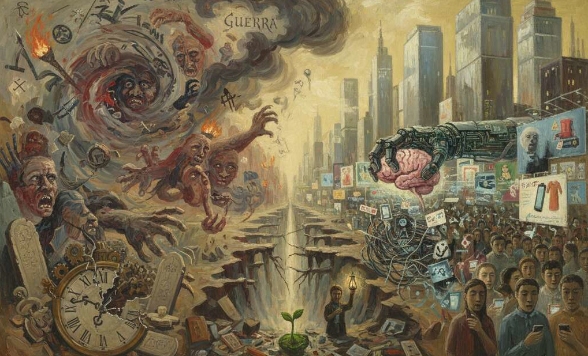

PERCHÉ’ LA GUERRA (parte seconda)

Questo tema del perché della guerra mi ha così affascinato perché nel mondo contemporaneo dove viviamo il tema riguarda come si forma la scienza contemporanea disponibile all’aggressività e alla violenza; quindi la parte che ora svolgerò è uno studio sulle cause che vanno a formare una coscienza della normalità sempre più appiattita o sempre più impulsiva priva di obiettivi superiori di incivilimento. Basta ad esempio citare le decine di guerre in corso in tutto il mondo e le normalità dei comportamenti che si esprimono in aggressività dirette e in dirette dalla fine degli anni settanta in poi anche in Italia, compresa l’esperienza terrorismo che abbiamo avuto.
Inizierò questo viaggio nella coscienza contemporanea dicendo che esistono dispositivi psicologici che con l’aggiunta di modifiche istituzionali “e non solo” del mondo, e modifiche psicobiologiche del sistema nervoso avvenute negli ultimi 60/70 anni, sono causa del difficile incivilimento della coscienza di oggi e del destino della normalità ad essere apatica o aggressiva senza trovare equilibrio e temperanza specie quando si agisce in conflitto che non tollera le differenze.
Un primo gruppo di cause riguarda gli organizzatori che chiamerei “esterni” della coscienza personale nelle loro funzioni e nei modi di essere di esempio: l’esercizio nella politica nella gestione amministrativa locale e statuale, il ruolo delle istituzioni formative soprattutto della scuola in generale, una vita familiare obbligata che non ha potuto e saputo arricchirsi di qualità educative adeguate: tutte queste cause sono importanti nel non aver dato l’incivilimento della coscienza.
Ma ora vorrei altresì porre lo sguardo su quella che noi chiamiamo cultura, i valori che trasmettiamo ai giovani in questa nuova epoca. Nella società dopo la seconda guerra mondiale e nel capitalismo occidentale globale è diventata ricca che desidera quel che vuole in un presente dove vede e vende immagini ed illusioni e compera oggetti: l’io si va arrendendo ai soli vantaggi personali come fosse una nuova religione; l’io non inventa più, non riflette con coraggio modi di affrontare incoerenze, differenze per arrivare a progredire verso una felicità migliore.
Nella cultura che respiriamo, nei processi educativi e formativi nonché nel vivere comune, le certezze della normalità io-mondo sono ridefinite da decenni in termini sociali e si ripercuotono sulle persone, vedi per es. nei singoli la dissociazione tra soddisfazione economica e sicurezza personale e sociale, e l’inadeguatezza dell’io dove i mezzi e i fini del vivere sono in un rapporto “perverso” tra cervello e tecnica di cui ora parleremo.
La soggettività della coscienza vive in questo stato di precarietà confusa e sono presenti modi personali di autenticità, ma anche di recita con le quali ci presentiamo gli uni agli altri. Molti fattori di una coscienza critica (secondo me necessarissima per formare una coscienza civile che agisca i conflitti, riconosca le differenze, faccia compromessi e non la guerra) in prevalenza sono scomparsi, perché c’è un appiattimento in questa normalità dove vince il concreto, l’indifferenza e i limiti e le morali sono sempre più indefiniti. Va aggiunto il degrado dei contenuti e delle forme della cultura e dei comportamenti in ogni loro accezione, per es. vedete i modi relazionali dentro e fuori le famiglie, la gestione ed il destino delle istituzioni formative e scolastiche, il ruolo degli intellettuali che dovrebbero indicare le vie della pacificazione della coscienza.
Un secondo gruppo di cause per la verità riguarda la storia del cervello. Il sistema nervoso centrale (SNC) dalla fine della seconda metà del novecento, quindi dall’invenzione del computer e della tecnologia evoluta fino all’AI, per così dire ha paradossalmente alterato il proprio essere biopsichico fisiologico.
Perché questi settantamila miliardi di connessioni nel SNC che formano tutte le funzioni fondamentali e che maturano di base nei primi 30 anni di vita? Queste capacità delle connessioni funzionali si chiama neuroplasticità: questa è lenta nel cervello, il SNC non nasce già maturo autosufficiente e autonomo, ma diventa e si sviluppa molto lentamente. Cosa accade nel dopoguerra? Il cervello inventa alimentazioni migliori, farmaci, vaccini, medicine e soprattutto alla fine degli anni ottanta ed inizio anni novanta inventa soprattutto computer e derivati che gli richiedono operazionalità che lo mandano in difficoltà. Il cervello va incontro ad una dissonanza o sfasatura adattiva (mismatch) che ora vi spiego in pratica con un es. concreto: nell’antica Roma l’età media di vita era 28 anni, nel 1950 l’età media era salita a 50/55 anni, quindi la vita media è salita di 24 anni circa. Ora accade che dal 1950 ad oggi in soli 70 anni l’età media di vita è passata da 50/55 anni a 86 anni di media per la donna e 81 circa per l’uomo.
Quindi il cervello ha inventato strumenti che hanno consentito il miglioramento dell’igiene, alimentazione ed il lavoro che ha liberato l’uomo dalla schiavitù e lo ha emancipato dal mondo della necessità al mondo della libertà: ma a livello psicologico profondo la dissonanza cerebrale significa che il cervello non si adatta con facilità a velocità operazionali con cui funzionano le macchine che esso stesso ha inventato.
Il cervello stimolato operativamente ad agire in maniera più velocizzata è più immediatistico, è meno paziente e reagisce in modo più rapido tentando maggiori prestazioni di efficacia. Come può essere ultra veloce il cervello a risolvere una relazione affettiva, una patologia cronica o un conflitto tra gli stati? Cioè il SNC ha inventato macchine operazionali che trascendono la sua efficienza operativa possibile da millenni, soprattutto il cervello prefrontale e frontale, che è inibitore della impulsività, cioè è quello dei progressi della formazione umana, del capire se stessi e del proporsi man mano che diventiamo grandi con lentezza, è il cervello che controlla sempre meno il suo funzionamento e questo è il danno fondamentale.
Perché qui è avvenuta la formazione e la mediazione culturale di tipo psicobiologico per la prima volta in decine di millenni da umanistica a informatica, cioè il cervello attuale dovrebbe avere la decisionalità sui vissuti personali di tipo lento e riflettuto, e invece? L’uomo come vive questo contrasto biopsichico? Sempre più spesso vince l’impulso rapido, aggressivo (vedi la logica del femminicidio: “io vorrei che tuffi come io vorrei e siccome tu proponi temi che io non tollero o la tua differenza, allora io sono persona solo se io ti aggredisco”).
Vedete come nella coscienza, quella aggressività che avevamo contenuto, se si presenta con la dissonanza delle SNC non si risolve in modo civile e ciò rende conto che l’uomo è un animale in ritardo. In questo tipo di condizioni in cui SNC si trova, si rianimano apatia o le impulsività estreme del cervello primitivo anatomicamente collocato in basso, mentre quello più maturo che forma la coscienza del progetto personale è nei lobi prefrontali (anatomicamente in alto) e quindi nella persona si va ritardando lo stile del proporsi che prevede mediazioni, parole, linguaggi ed azioni posticipate.
Non vi è più una paideia, una educazione culturale della personalità che stimola l’identità creando invenzioni, fantasie, progetti veri verificabili; prevale il comportamento rapido di imitazione, recita, dipendenza, aggressività. Le impulsività così espresse vanno prevalendo nella coscienza il cui tempo vissuto è un presente immediatistico. Qui vincerà il piacere rapido, il consumismo degli oggetti altrettanto rapido, il mercato dei desideri e dei diritti (tutti rivendicano i diritti, pochi il dovere) e si va perdendo l’interesse del passato e del presente verso il futuro. C’è un tempo immobile che si ripete dove prevale l’uso dell’altro nelle relazioni personali e si riduce l’essere ad avere ed ad oggetto.
Vale la pena di ricordare come per le teorie evoluzionistiche del cervello la differenza e l’identità personale si sono formate in millenni, attraversando le imperfezioni nelle quali noi nasciamo. Le imperfezioni, le mutazioni, le divergenze, le differenze genetiche vengono a contatto con circostanze ambientali fisiche e mentali: ma sono proprio le imperfezioni, i compromessi biologici e le differenze che consentono all’uomo delle soluzioni creative possibili per adattamenti progressivi (es.: invece che scaricare l’aggressività malignamente, scrivo poesie, risolvo un problema pratico, imparo bene un lavoro, rido di me stesso, uso un po’ di buon senso insomma opero nella vita per viverla bene).
Con un SNC unico negli esseri viventi homo sapiens ha vinto l’adattamento ovunque nel pianeta, in tutti i climi, ed è riuscito a sviluppare adattamenti importanti legai alla maturazione di base dei miliardi di connessione tra cellule nervose per sviluppare le funzioni da quelle più elementari del cervello basso fino alla maturazione dei lobi frontali che ora vi elenco (dal cervello più primitivo al cervello più elevato): l’attività dei riflessi, attività emotive, impulsività, le prime memorie, le prime forme di pensiero critico e di valutazione, il cervello primitivo all’uomo primitivo per difendersi dall’aggressività e per sopravvivere (vedete la tomba del cacciatore alla necropoli etrusca di Tarquinia e capirete tutto di questo).
Infine, la complessità del cervello arriva, man mano che si sviluppa, fino alla maturazione delle capacità superiori; soprattutto homo sapiens ha vinto perché ha maturato il linguaggio dei gesti, della parola, la comprensione dei significati, dei simboli e con questo ha sviluppato le relazioni possibili con l’altro. Per necessità o per scelta: se io ti voglio esprimere un sentimento di simpatia o di antipatia, lo farò con i gesti, con la parola, con il linguaggio simbolico. Questo sviluppo del cervello che avviene oggi ha messo in difficoltà SNC che è dissonante e sta adattando la sua normalità verso un mediocre ribasso.
La civiltà personale come conquista di identità migliore per merito e per dovere, di per se affascinante, è in declino; risente di corruzioni mentali economiche di illusioni di potere o di politica che si vogliono affermare sull’altro con aggressività, con ignoranza arrogante, con ipocrite recite e con impulsività; quasi mai vince l’equilibrio del comportamento, la dignità di un modulato compromesso e dell’ascolto delle verità diverse.
Vorrei far presente un’altra caratteristica fondamentale che si osserva. Ritengo che la coscienza da 30 anni in qua almeno, risenta di una resa educativa psicobiologica: per cui abbiamo generazioni meno preparate culturalmente, soprattutto generazioni che non sanno di non sapere, persone che confondono l’opinione con la competenza, la sensazione con l’analisi, l’emozione con gli argomenti; in sostanza oggi si parla per sentito dire degli argomenti più vari e si formano opinioni (con il rinforzo di internet e dei social) che non hanno studiato bene ed a fondo il tema di cui parlano con argomentazioni valide. Questo nella mente sta comportando la messa in crisi della capacità di distinguere tra diritto di parola, conoscenza ed autorevolezza e tra libertà di espressione e competenze.
Tutti possono dire tutto su tutti e tutti hanno ragione perché la verità del sentito dire è diventata soggettiva, liquida, negoziabile perché evidentemente verificare il problema e conoscerlo a fondo è ormai difficile, richiederebbe tempo e fatica. Un cervello che non volesse essere così è un cervello anticonformista che vuole riflettere a fondo: forse abbiamo perso gli anticorpi intellettuali dei lobi prefrontali necessari a distinguere il plausibile dal mondo assurdo ed alienato. Sta succedendo un fatto fondamentale; questa riduzione delle capacità cerebrali ad evolversi per un progetto personale svela che lo stesso si va arrendendo al vantaggio rapido ed immediato, alla legge “Dio è morto” ad esempio quando tutti sappiamo che: come facciamo a dare significato a 50 anni di convivenza insieme quando ciò capita per la prima volta in migliaia di anni e quando questo povero cervello è riuscito a farci aumentare la vita media di 35 anni negli ultimi 70? Quindi il cervello avverte una sua inadeguatezza, si sente indifeso e inadatto a livello inconscio e non solo; nulla ci fa più paura di questo; allora l’aggressività che si esprime oggi è un farmaco, è una recita, contro il vissuto di impotenza della coscienza. E’ un modo per rassicurare se stessi illudendoci che possiamo vincere con l’impulsività.
L’SNC avverte di essere insicuro e per sfuggire all’angoscia, con rabbia violenta, ci fa aderire ad una visione semplificata chiara e cristallina dove spostiamo il tema tra bene e male riproponendo alla coscienza di oggi il bisogno antico e regressivo del nemico come senso alla vita. Oggi non riuscendo ad accettare la pace che è un processo che richiede molto tempo e pazienza, il cervello si sente inadeguato ed insicuro e sta imparando adesso a gestire sulla sua pelle questa complessità. Con l’aggressività vogliamo affermare in fondo l’idea di una realtà modificabile in una direzione insanamente egoistica, spesso ideologica per trovare rassicurazioni rapide.
Questo attesta la propensione della mente umana a semplificare le relazioni e ad abolire soprattutto il tema principale dell’incontro umano che è quello con le differenze dell’altro. Pensare come gestire le differenze nella sfera affettiva, nella conduzione di un rapporto di amore e di amicizia, oppure nella politica degli Stati. La mente umana semplifica al massimo il mondo per tentare di controllarlo.
(La TERZA e ULTIMA PARTE sarà pubblicata nel prossimo numero)
Giovanni Mastrangeli